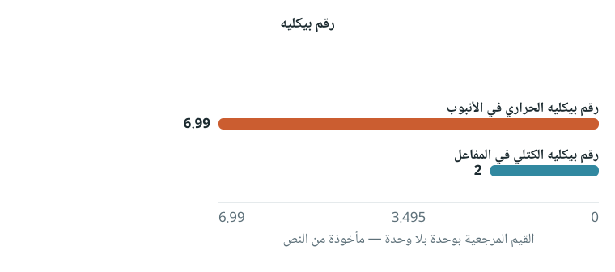

رقم بيكليه
Péclet number
رقم بيكليه يقيس نسبة انتقال الحرارة أو الكتلة بالحمل إلى انتقالها بالانتشار: Pe = v·L/α أو Pe = v·L/D. إذا كان كبيراً سيطر الحمل، وإذا كان صغيراً سيطر الانتشار. يُستعمل في تصميم المفاعلات والمبادلات الحرارية وفي تحليل خلط الملوثات.
في أي جريان ينتقل الحرارة أو المادة بطريقتين: بالحمل مع حركة السائل، وبالانتشار نتيجة التدرج. ورقم بيكليه هو نسبة معدل الحمل إلى معدل الانتشار على مسافة مميزة L: Pe = v·L/α للحرارة، حيث α الانتشارية الحرارية، وPe = v·L/D للكتلة، حيث D معامل الانتشار. مثال: ماء يجري بسرعة 0.500 m/s في أنبوب قطره 0.0200 m، وα = 1.43×10⁻⁷ m²/s: Pe = 0.500×0.0200/1.43×10⁻⁷ = 6.99×10⁴، أي أن الحمل يسيطر بفارق كبير.
كيف تعمل الظاهرة؟
الحمل ينقل الحرارة أو المادة بكتلة السائل المتحرك نفسها، والانتشار ينقلها بحركة الجزيئات العشوائية. ومعدل الحمل يتناسب مع السرعة والمسافة، ومعدل الانتشار يتناسب مع الانتشارية فقط. فإذا كان السائل سريعاً أو المسافة طويلة، يقطع السائل المسافة قبل أن تنتشر فيه الحرارة أو المادة، فيسيطر الحمل. وإذا كان السائل بطيئاً أو المسافة قصيرة، ينتشر التدرج قبل أن يتحرك السائل، فيسيطر الانتشار. ولهذا يحدد الرقم شكل الحل: عند Pe كبير تكون الجبهات حادة، وعند Pe صغير تكون متدرجة.
العلاقة بالأرقام
Pe = v·L/α = Re·Pr. مثال: v = 0.500 m/s، L = 0.0200 m، α = 1.43×10⁻⁷ m²/s → Pe = 6.99×10⁴. والتحقق عبر رينولدز وبراندتل: Re = 0.500×0.0200/1.004×10⁻⁶ = 9960، وPr = 1.004×10⁻⁶/1.43×10⁻⁷ = 7.02، وحاصل ضربهما 6.99×10⁴، مطابق.
مفاهيم متقاربة
يُفرَّق بين بيكليه ورينولدز: رينولدز يقارن القصور باللزوجة، وبيكليه يقارن الحمل بالانتشار، وقد يكون الجريان صفيحياً (Re صغير) وPe كبيراً في السوائل اللزجة. ويُفرَّق بين بيكليه وبراندتل: براندتل خاصية مادة، وبيكليه خاصية جريان. ويُفرَّد بين بيكليه الحراري والكتلي: الأول للحرارة والثاني للمادة، وقد يختلفان في الجريان نفسه. وأخيراً يُفرَّق بين بيكليه المحوري والعرضي: الأول على طول الجريان، والثاني عبره.
حدود التطبيق
الرقم يعتمد على اختيار الطول المميز L، فلا تُقارن أرقام محسوبة بأطوال مختلفة. ولا يصف الجريان المضطرب وحده، حيث يزيد الانتشار الفعلي بالاضطراب ويجب استعمال انتشارية مضطربة. ولا يصف الأنظمة التي تتغير فيها الخواص مع الحرارة. ولا يُستعمل في حساب معدل الانتقال دون رقم شيروود أو نسلت، لأن بيكليه يحدد الآلية لا المعدل.

| الكمية | القيمة | المصدر |
|---|---|---|
| رقم بيكليه الحراري في الأنبوب | 6.99×10⁴ بلا وحدة | [1] |
| رقم بيكليه الكتلي في المفاعل | 2.00×10⁷ بلا وحدة | [1] |
المصادر
- 1 CODATA Value: molar gas constant — NIST — CODATA 2022 recommended values (2024). physics.nist.gov/cgi-bin/cuu/Value?r · اطُّلع عليه 2026-11-22
- 2 The International System of Units (SI), 9th edition (2019) — BIPM — Bureau International des Poids et Mesures (2019). www.bipm.org/en/publications/si-brochure · اطُّلع عليه 2026-11-22
- 3 The International System of Units (SI), 9th edition (2019) — BIPM — Bureau International des Poids et Mesures (2019). www.bipm.org/en/publications/si-brochure · اطُّلع عليه 2026-11-22
استشهد بهذا المصطلح
الصيغتان مبنيتان من بيانات الصفحة نفسها: العنوان والتاريخ ورابط النسخة المنشورة.
رقم بيكليه — Péclet number. (2026). ديوان المعرفة — انفراد. https://infiradev.com/diwan/terms/term-peclet-number.html
@misc{term-peclet-number2026,
title = {رقم بيكليه},
titleaddon = {Péclet number},
howpublished = {{ديوان المعرفة — انفراد} — مرجع علمي عربي},
year = {2026},
url = {https://infiradev.com/diwan/terms/term-peclet-number.html},
urldate = {2026-11-26},
note = {مراجعة علمية: hermes (مراجعة معتمدة 2026-11-26)}
}
راجعه: hermes (مراجعة معتمدة 2026-11-26) · 2026-11-26 · آخر تحديث 2026-11-22